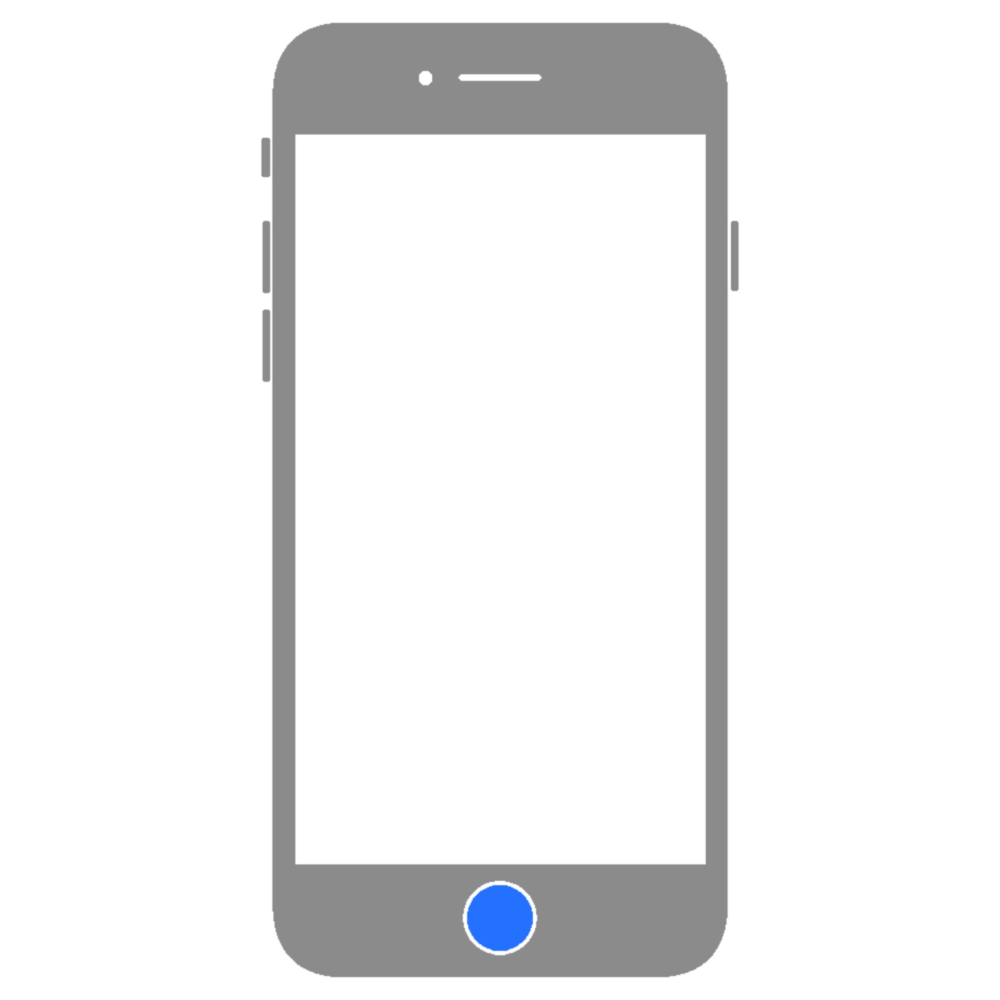

About Accessibility Shortcut for iPhone, iPad, and iPod touch with VoiceOver
Learn how to setup and use the accessibity shortcut on an iPhone, iPad, or iPod touch for quick access to various accessibility features.
Setup
To use the accessibility shortuct, you must first set it up with the settings you want to be able to quickly and easily access.
- Open Settings
- Tap Accessibility
- Scroll down to the very bottom
- Tap Accessibility Shortcut

Select the features you want to add to the shortcut. You can also rearrage the items by dragging the  icon next to any of the items.
icon next to any of the items.
Use with Button Shortcut
You can easily access your Accessibility Shortcut using your device's Home Button or Power Button.
Home Button
If your device has a Home Button, triple-click it to toggle the accessibility shortcut.
Power Button
If your device does not have a Home Button, triple-click the Power Button instead.
Control Center
You can also add the Accessibility Shortcut button or specific accessibility features to Control Center. Learn how here: Customize the Control Center on iPhone& iPad >
Last updated: March 21, 2025
Reference the original support article by Apple here: About the Accessibility Shortcut for iPhone, iPad, and iPod touch - Apple Support
All references to Apple Inc. and their products and services are trade-marked and are used in these articles for educational purposes.